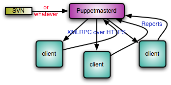
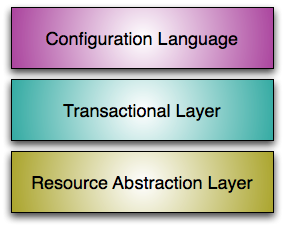

Introduction to Puppet
Why Puppet
As system administrators acquire more and more systems to manage, automation of mundane tasks is increasingly important. Rather than develop in-house scripts, it is desirable to share a system that everyone can use, and invest in tools that can be used regardless of one’s employer. Certainly doing things manually doesn’t scale.
Puppet has been developed to help the sysadmin community move to building and sharing mature tools that avoid the duplication of everyone solving the same problem. It does so in two ways:
- It provides a powerful framework to simplify the majority of the technical tasks that sysadmins need to perform
- The sysadmin work is written as code in Puppet’s custom language which is shareable just like any other code.
This means that your work as a sysadmin can get done much faster, because you can have Puppet handle most or all of the details, and you can download code from other sysadmins to help you get done even faster. The majority of Puppet implementations use at least one or two modules developed by someone else, and there are already hundreds of modules developed and shared by the community.
Learning Recommendations
We’re glad you want to learn Puppet. You’re free to browse around the documentation as you like, though we generally recommend trying out Puppet locally first (without the daemon and client/server setup), so you can understand the basic concepts. From there, move on to centrally managed server infrastructure. Ralsh is also a great way to get your feet wet exploring the Puppet model, after you have read some of the basic information — you can quickly see how the declarative model works for simple things like users, services, and file permissions.
Once you’ve learned the basics, make sure you understand classes and modules, then move on to the advanced sections and read more about the features that are useful to you. Learning all at once is definitely not required. If you find something confusing, file a ticket or email us at faq@puppetlabs.com to let us know.
System Components
Puppet is typically (but not always) used in a client/server formation, with all of your clients talking to one or more central servers. Each client contacts the server periodically (every half hour, by default), downloads the latest configuration, and makes sure it is in sync with that configuration. Once done, the client can send a report back to the server indicating if anything needed to change. This diagram shows the data flow in a regular Puppet implementation:

Puppet’s functionality is built as a stack of separate layers, each responsible for a fixed aspect of the system, with tight controls on how information passes between layers:

See also Configuring Puppet. For more information about components (puppetmasterd, puppetd, puppet, and so on), see the Tools section.
Features of the System
Idempotency
One big difference between Puppet and most other tools is that Puppet configurations are idempotent, meaning they can safely be run multiple times. Once you develop your configuration, your machines will apply the configuration often — by default, every 30 minutes — and Puppet will only make any changes to the system if the system state does not match the configured state.
If you tell the system to operate in no-op (“aka
dry-run”), mode, using the --noop argument to one of the Puppet
tools, puppet will guarantee that no work happens on
your system. Similarly, if any changes do happen when running
without that flag, puppet will ensure those changes are logged.
Because of this, you can use Puppet to manage a machine throughout its lifecycle — from initial installation, to ongoing upgrades, and finally to end-of-life, where you move services elsewhere. Unlike system install tools like Sun’s Jumpstart or Red Hat’s Kickstart, Puppet configurations can keep machines up to date for years, rather than just building them correctly only the first time and then neccessitating a rebuild. Puppet users usually do just enough with their host install tools to boostrap Puppet, then they use Puppet to do everything else.
Cross Platform
Puppet’s Resource Abstraction Layer (RAL) allows you to focus on the parts of the system
you care about, ignoring implementation details like command
names, arguments, and file formats — your tools should treat all
users the same, whether the user is stored in NetInfo or
/etc/passwd. We call these system entities
resources.
Ralsh, listed in the Tools section is a fun way to try out the RAL before you get too deep into Puppet language.
Model & Graph Based
Resource Types
The concept of each resource (like service, file, user, group, etc) is modelled as a “type”. Puppet decouples the definition from how that implementation is fulfilled on a particular operating system, for instance, a Linux user versus an OS X user can be talked about in the same way but are implemented differently inside of Puppet.
See the types reference for a list of managed types and information about how to use them.
Providers
Providers are the fulfillment of a resource. For instance, for the package type, both ‘yum’ and ‘apt’ are valid ways to manage packages. Sometimes more than one provider will be available on a particular platform, though each platform always has a default provider. There are currently 17 providers for the package type.
Modifying the System
Puppet resource providers are what are responsible for directly managing the
bits on disk. You do not directly modify a system from Puppet language
— you use the language to specify a resource, which then
modifies the system. This way puppet language behaves exactly the same
way in a centrally managed server setup as it does locally without a server.
Rather than tacking a couple of lines onto
the end of your fstab, you use the mount type to create a new
resource that knows how to modify the fstab, or NetInfo, or
wherever mount information is kept.
Resources have attributes called ‘properties’ which change the way a resource is managed. For instance, users have an attribute that specifies whether the home directory should be created.
‘Metaparams’ are another special kind of attribute, those exist on
all resources. This include things like
the log level for the resource, whether the resource should be in
noop mode so it never modifies the system, and the relationships
between resources.
Resource Relationships
Puppet has a system of modelling relationships between resources — what resources should be evaluated before or after one another. They also are used to determine whether a resource needs to respond to changes in another resource (such as if a service needs to restart if the configuration file for the service has changed). This ordering reduces unneccessary commands, such as avoiding restarting a service if the configuration has not changed.
Because the system is graph based, it’s actually possible to generate a diagram (from Puppet) of the relationships between all of your resources.
Learning The Language
Seeing a few examples in action will greatly help in learning the system.
For information about the Puppet language, see the latest Puppet language reference
Contents
Download the Docs

Download Puppet Enterprise